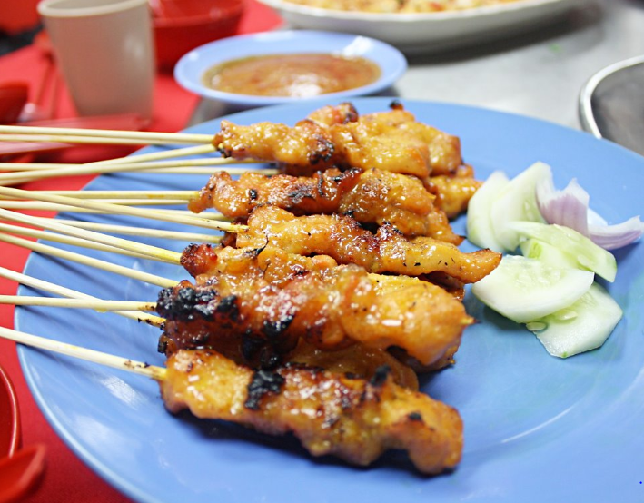
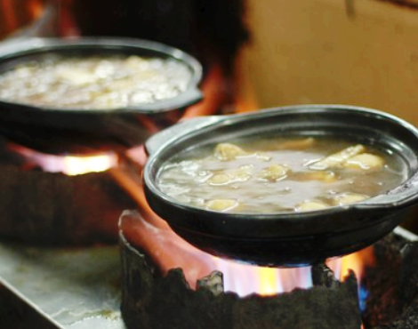
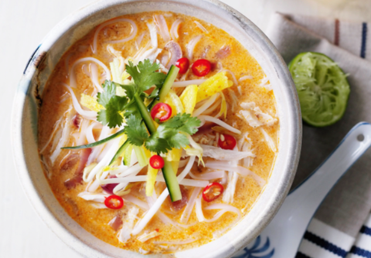
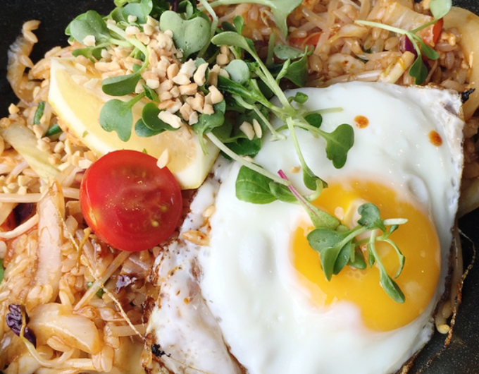

ღ사테
양념한 돼지고기, 소고기, 닭고기, 새우꼬치 등을 숯불에 구운 후 땅콩소스에 찍어 먹는 요리이다.

ღ바쿠테
돼지갈비에 허브와 마늘을 넣고 푹 고은 요리이다.
우리나라의 갈비탕과 비슷한 개념이다.
현지인들의 보양식으로 불리며 깔끔하고 고소한 육수로 인해 한국인의 입맛에 더 잘 맞는 음식이다.
현지인들의 보양식으로 불리며 깔끔하고 고소한 육수로 인해 한국인의 입맛에 더 잘 맞는 음식이다.

ღ락사
생선이나 닭으로 우린 매콤한 국물에 쌀국수를 넣어 만든 국수요리이다.
한국인에게는 호불호가 크게 갈린다.

ღ나시고랭
해산물,닭고기,돼지고기,소고기 등을 여러 채소와 함께 매콤한 삼발 소스와 간장,토마토소스 고루 섞어 볶은뒤 달걀을 올려먹는 요리이다.
